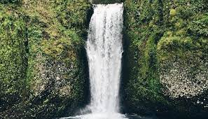

- lista
da aula
de desenvolvumento
''
web 1
Estevão Lima dos Santos Alencar
Estevão Lima , nascido em ??/??/????
natural de taikolandia
curiosidades
musíco percurcionista ah mais de 6 anos,
no grupo de taiko Yutaka daiko.
Hoje atualndo como lider e sensei no grupo de taiko Kyouwa, de embu guaçu
-
gosto de gatos
de taiko.
de animes/mangas(principalmente de one piece).
informaçoões
- tel : (44)8728-5567
e-mail :emailimaginario@gmail.com

estou aprendendendo essas ferramantas usadas em desenvolvimento web